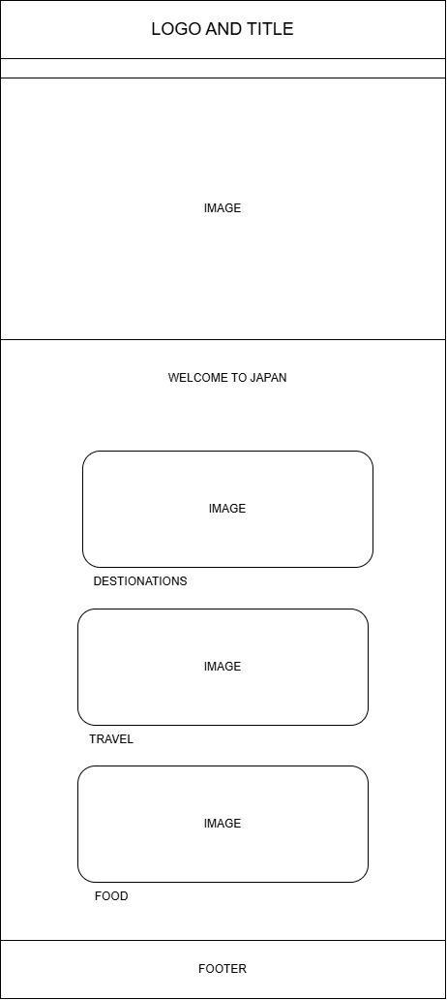
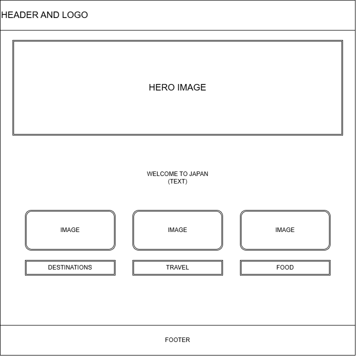

Site Name
Discover Japan -
I chose this name because the purpose of my website
is to help people discover Japan, its food and beautiful destinations.
The name is simple, memorable, and represents
the main purpose of the website.
Possible domain: japanthetravel.com
Site Purpose
Discover Japan will be an informative travel guide for people who want to learn more about Japan or plan a future trip. The website will include information about popular cities and attractions, traditional Japanese dishes and useful travel tips. It will also highlight places and experiences that visitors might enjoy exploring. The goal is to create a website that is both informative and inspiring for anyone interested in Japan, like myself.
Scenarios
These are questions that visitors might ask:
- What are the most popular places to visit in Japan for first-time travelers?
- What traditional Japanese foods should I try when visiting Japan?
- What are some useful travel tips for planning a trip to Japan?
Color Schema
The website will use colors inspired by Japanese aesthetics. The palette combines warm neutral tones with traditional red and natural green.
- Ivory: Main page background.
- Red: Main headings, buttons, and accents.
- Charcoal: Body text, navigation, and footer.
- Sage green: Secondary accents and decorative details.
Typography
Noto Serif JP - Headings
This font will be used for the main title, section headings, and important titles.
Noto Sans - Body Text
This font will be used for paragraphs, navigation links, buttons, and general content.
Wireframes
The following wireframes represent the planned homepage layout on mobile and desktop screens.
Mobile View

Desktop View
